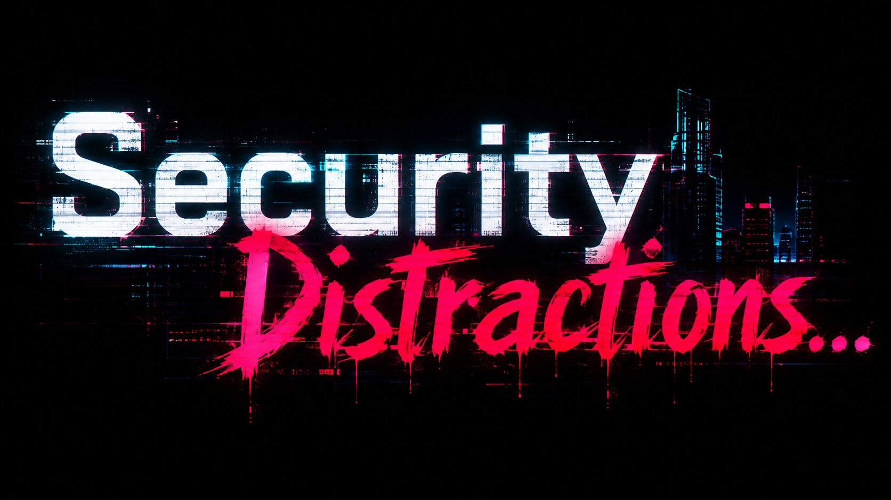

<!doctype html><meta charset="utf-8">
<title>favicon source</title>
<!--
  Source for the site icons. Rendered headless at each size by build.mjs; not served.

  The wordmark is 1.78:1, so it cannot be a favicon — at 16px it is a smudge. This lifts the
  glitched "S" out of it instead: it is the real brand asset, and a single letter is the most
  legible thing available in a 16px box. An "SD" monogram was tried and rejected — two letters
  at 16px are indistinguishable.

  Query params: ?size=<edge px>
-->
<style>
  html,body{margin:0;background:transparent}
  .sq{position:relative;overflow:hidden;background:#02030a}   /* --black */
  .clip{position:absolute;overflow:hidden;left:50%;top:50%;transform:translate(-50%,-50%)}
  .clip img{position:absolute}
  /* Scanlines are invisible below ~96px and only muddy the glyph, so they are added there only. */
  .scan{position:absolute;inset:0;pointer-events:none;
        background:repeating-linear-gradient(#0000 0 3px,#0006 3px 4px)}
</style>
<div id="root"></div>
<script>
  const S = +new URLSearchParams(location.search).get('size') || 512;
  // Glyph box of the "S" within logo.png (1672x941), measured off a 10% grid render.
  const G = { x: 84, y: 196, w: 186, h: 258 };
  const fill = S >= 32 ? 0.86 : 0.94;   // tiny sizes get less padding: more ink, more legible
  const k = (S * fill) / G.h;
  const el = document.getElementById('root');
  el.className = 'sq';
  el.style.width = el.style.height = S + 'px';
  // The glitch texture greys the glyph down when it is resampled to 16 or 32px; a contrast lift
  // keeps the white reading as white without losing the magenta fringe.
  if (S <= 32) el.style.filter = 'contrast(1.25) brightness(1.08)';
  el.innerHTML =
    `<div class="clip" style="width:${G.w*k}px;height:${G.h*k}px">
       
     </div>` + (S >= 96 ? '<div class="scan"></div>' : '');
</script>
